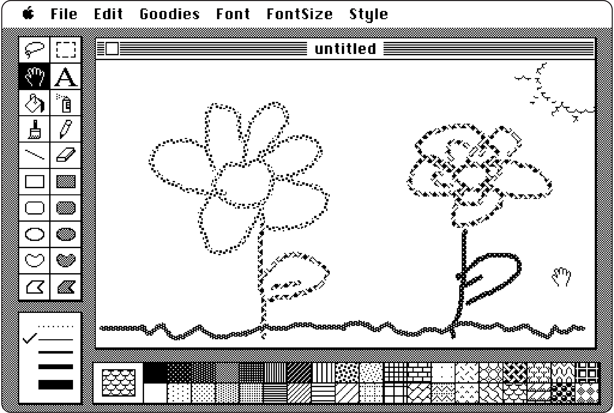

The digital humanities is a field changing the way we approach the production, preservation, and distribution of information and knowledge. For a traditional definition of the digital humanities, I am drawn to the one provided by Burdick et al. in their 2012 book, Digital_Humanities: “The digital humanities generates a praxis defined by the intermeshing of ideology and computational methods working to redraw the boundaries between the humanities, the social sciences, the arts, and the natural sciences to foster a new tradition.”
My interests in the digital humanities stems from my experience in media and the arts. With the mass digitization of various media from their original carrier formats in today's age, cultural heritage and memory workers must have an understanding of digital media technologies to foster improved means of working with and providing access to these collections. It is crucial to note a digital discipline does not necessarily oversee others; nor do I believe that digital praxis is the sole solution for formulating answers to humanities-based questions given the increasing use of digital technology. While it is no question that digital mediums and technology pervade much of present-day society, my practice is rooted in an understanding and the history of the analog tradition and grounded in critical approaches to the often utopianist angle of digital technologies, our reliances on them, and their uses.
My work also simultaneously understands there is much to appreciate and understand within the digital sphere and the utility of digital humanities tools can enhance our understanding of various fields. Speaking from a more practical approach, part of my ethos in this work is demystifying programming languages and digital technologies to make them more understandable and utilized within humanities contexts, supporting better content discoverability through metadata, and participating in the documentation of digital tools and resources. I believe these efforts can help bridge a gap between art and the technological sciences, formulate new approaches to media and knowledge, and that use of these tools with a critical lens can help the memory work traditions support the preservation of ongong, living histories.
Below is a non-exhaustive but focused list of the range of writing, works, and projects aligned with my interests in the digital humanities:
- The Arclight Guidebook to Media History and the Digital Humanities(opens in a new tab)
- "Digital Humanities and/in Film Archives," an introduction to a special edition of The Moving Image by guest editors Dimitrios Latsis and Grazia Ingravalle(opens in a new tab)
- "Looking Back, Thinking Forward: A Digital Humanities Assessment of Equity, Diversity, and Representation in Twenty Years of Publishing in Cinema Journal and JCMS" by Yelana Sims and Nina Lorenz(opens in a new tab)

Indeterminable Frames(opens in a new tab)
This project continues ongoing conversations about recontextualizing and expanding our understanding of how we engage with film using avant-garde and experimental works originating as celluloid media ascase studies. Digitization of celluloid media provides greater points of access to works on analog formatsyet should not be considered a means to an end as there is more to explore within this relationship. Using the computational tools FFmpeg, Image Macroanalysis in JavaScript, and ImagePlot for ImageJ, we canapproach a different visual understanding of cinema that allows us to challenge the traditional concept oftime and its relation to film. Can we encounter new meanings from moving image works when we view theframes concurrently? How do digital humanities applications contribute to an alternative method of engage-ment with moving images? Are the resulting revisualizations an alternative form of film analysis, and thus, a form of cinematic consciousness?
Originally created as my final project in Digital Humanities 201: Introduction to Digital Humanities with Professor Miriam Posner, this project has since been expanded into manuscript format, where it was published in a special edition of the journal Cinergie — Il Cinema e le altre Arti titled "Film Heritage and Digital Scholarship - Computer Based Approaches to Film Archiving, Restoration and Philology" edited by Rossella Catanese, Adelheid Heftberger, and Christian Gosvig Olesen.
Villon, Patricia Ledesma. “Indeterminable Frames: Exploring Digital Humanities Approaches and Applications for the Moving Image.” Cinergie – Il Cinema e Le Altre Arti 10, no. 20 (2021): 125–38. https://doi.org/10.6092/issn.2280-9481/13055(opens in a new tab).

Emulation for Archivists(opens in a new tab)
A general lesson in emulation for digital media archivists—especially for those with little to no experience, have no idea what emulation is, or want to learn more about how emulation can be used for archival workflows. Created by me and Brian Belak(opens in a new tab) as part of Professor Anne Gilliland's Information Studies 241: Digital Preservation class.
The Moving Image Distributor Wikibase(opens in a new tab)
Data sits in silos between numerous organizations distributing independent and artist-made works. While the many organizations distribute the works of numerous overlapping filmmakers and titles, some organizations may have titles by particular artists other organizations may not have, leading to increased search time for users or even missed opportunities for access. This outlined strategy proposes a high-level plan for aggregating distributor information on Wikibase by using the organizations Arsenal, Light Cone, and Video Data Bank as case studies. Standards utilized include PBCore controlled vocabularies, JSON-Linked Data (LD), and Wikidata QIDs. Created in Information Studies 461: Metadata taught by Melissa Gill.
Data Visualization at the AFI Catalog of Feature Films
In Fall 2021, my friend and colleague Russell Zych(opens in a new tab) and I interned at the AFI Catalog of Feature Films(opens in a new tab). The project gave me the opportunity to put into practice more hands-on approaches to data cleaning and visualization utilizing the data forming the foundation of the catalog. The AFI Catalog is an ongoing project by the American Film Institute (AFI)(opens in a new tab) to catalog all commercially-made and theatrically exhibited American motion pictures from the birth of cinema in the late 1890s to the present. Works within the catalog include a film's title, production and distrubtion companies, production and release dates, cast, and plot summaries, in addition to other snippets of information. We cleaned the catalog data using OpenRefine and visualized the data using Tableau. Note: Due to company policy, the data visualizations from the full project cannot be publicly shared. The image here is included as a brief sample of our work.
Russell and I also compiled a bibliography of relevant sources for our work as part of our final in Information Studies 498: Internship with Dee Winn, which can be found here(opens in a new tab).
The Soundies Jukebox
The Soundies Jukebox is an application created with Xojo, a programming environment and language. Blending media archaeology and history, metadata, programming, user design, and the digital humanities, the jukebox application digitally imitates the ability to play short music videos on a panoram jukebox as if one were interacting with the device during the 1940s. Working in a group with five other graduate students, I designed the metadata schema that was then translated into the Xojo programming language for the application's backend. The project, however, it not accessible online due to it being a local application. This capstone project was created as part of Stephen Mamber's FTV 224: Computer Applications for Film Study. (Photo: Margaret Herrick Library, Academy of Motion Picture Arts and Sciences)